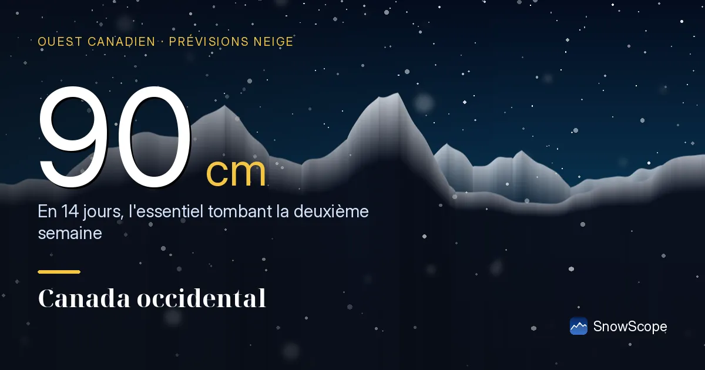
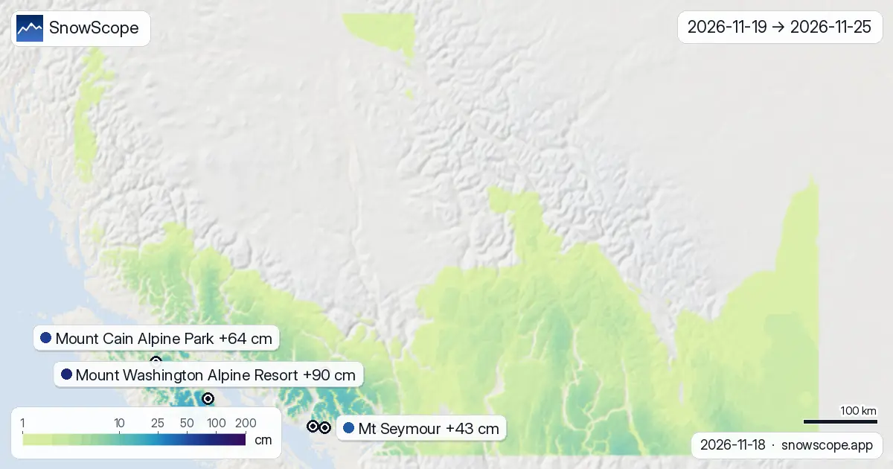

Canada occidental : 90 cm en 14 jours, l'essentiel tombant la deuxième semaine
Mount Washington Alpine Resort gagnera environ 90 cm de neige au cours des deux prochaines semaines, l'essentiel arrivant après le 25 novembre. La deuxième semaine apporte les accumulations les plus importantes, culminant le 26 novembre avec 27 cm.
Consultez les prévisions neige en temps réel pour Mount Washington Alpine Resort sur l'application SnowScopeHauteurs de neige, alertes poudreuse et carte 3D, gratuitement.
Quand la neige tombe : un début calme, puis une action soutenue
La première semaine (19-25 novembre) reste globalement sèche. Seulement 20 cm sont prévus sur les terrains de mi-montagne de la région pendant les jours 1 à 7, et Mount Washington lui-même ne verra que 18 cm pendant cette période. Le véritable événement commence le 24 novembre, quand 9 cm tombent.
La deuxième semaine (26 novembre au 2 décembre) est où l'histoire change. Nos modèles s'accordent sur 70 cm qui tomberont à Mount Washington sur ces huit jours. Le jour le plus chargé est le 26 novembre : 27 cm. Suivi d'un autre jour marqué le 27 novembre avec 22 cm, puis un pic secondaire le 28 novembre avec 11 cm. Même après la dissipation du système principal, des chutes légères se poursuivent début décembre.
| Station | Hauteur de neige | Neige fraîche, 72 h | Attendu, jours suivants | Sommet |
|---|---|---|---|---|
| Mount Washington Alpine Resort | 104 cm | 8 cm | 0 cm | 1 569 m |
| Mount Cain Alpine Park | 89 cm | 8 cm | 0 cm | 1 616 m |
| Mt Seymour | 6 cm | 8 cm | 0 cm | 1 255 m |
| Sasquatch | 23 cm | 15 cm | 0 cm | 1 316 m |
| Whistler Blackcomb | 136 cm | 8 cm | 0 cm | 2 259 m |
| Cypress Mountain | 6 cm | 9 cm | 0 cm | 1 426 m |

L'altitude compte : les mi-pentes en reçoivent le plus
Sur tous les terrains du Canada occidental, la bande d'altitude 1 500-2 000 m est prévue pour recevoir le plus de neige nouvelle : une médiane de 7 cm, certaines zones en recevant jusqu'à 13 cm. Au-dessus de 1 000 m, toutes les altitudes connaissent une accumulation, mais les pics plus élevés (3 000-4 500 m) en reçoivent moins — environ 6 cm médiane — car ils se situent au-dessus d'une grande partie des précipitations.
Les pentes supérieures de Mount Washington à 1 349 m se situent dans la bande favorable 1 500-2 000 m, expliquant pourquoi il domine la région. Mount Cain Alpine Park et les stations basses près du niveau de la mer (Cypress Mountain, Mt Seymour) recevront proportionnellement moins, bien qu'elles gagnent tout de même de la neige mesurable.

Quelles stations gagnent le plus
Mount Washington Alpine Resort domine la région avec 90 cm prévus sur 14 jours. Mount Cain Alpine Park vient ensuite avec 64 cm, aussi sur l'île de Vancouver. Les stations côtières basses comme Mt Seymour et Cypress Mountain reçoivent environ 40-43 cm, tandis que Whistler Blackcomb, malgré une altitude plus élevée (2 259 m au sommet), est prévue pour ne gagner que 38 cm car les deux modèles météorologiques s'accordent moins bien à cette latitude et altitude.
Par zone, 40 000 km² du terrain montagneux de la région sont prévus pour recevoir 20 cm ou plus sur la quinzaine. Seulement 7 700 km² verront 50 cm ou plus — principalement les pics du nord de l'île de Vancouver et les pentes les plus élevées.

Comment cela se compare à l'histoire
Mount Washington a normalement une épaisseur de 30 cm fin novembre, les semaines les plus enneigées de la saison étant historiquement les semaines 8, 53 et 13 (fin février, début janvier et fin mars). Aujourd'hui, elle n'a que 104 cm en mi-pente, bien en dessous du maximum typique de 78 cm pour cette époque de l'année. Les 90 cm arrivant sur deux semaines aideront mais laisseront la montagne sous la moyenne pour fin novembre.
Incertitude et ce à observer
Ces valeurs proviennent de la moyenne de deux modèles mondiaux indépendants (ECMWF et NOAA). L'écart entre eux est large : Mount Washington pourrait voir aussi peu que 48 cm ou jusqu'à 133 cm selon la trajectoire des systèmes. Les modèles s'accordent fortement sur les dates de pic 26-27 novembre, mais la quantité ces jours-là pourrait varier de plusieurs centimètres si les modèles de direction changent.
La neige en début de saison peut être fine sur les rochers aux altitudes basses, particulièrement sur les pentes basses exposées près de 1 000 m. Les pentes supérieures conservent la neige plus longtemps. Surveillez les mises à jour des prévisions au cours des cinq prochains jours ; si les systèmes se décalent vers le sud, les stations côtières gagnent plus ; s'ils se décalent vers le nord, les pics insulaires en bénéficient.
Conseils aux skieurs
- Meilleur moment pour skier : visez le 27 novembre et après à Mount Washington et Mount Cain. La neige la plus importante tombe 26-28 novembre ; prévoyez d'être là vers le milieu-fin de semaine si vous voulez des traces fraîches.
- Stratégie d'altitude : restez aux pentes intermédiaires et supérieures (1 500 m et plus) où la neige est plus profonde et plus fiable. Les pentes basses près des bases du village peuvent être fines en début de saison.
- Surveillez la prévision. L'écart entre les deux modèles est de 85 cm à Mount Washington (bas 48, haut 133). Revérifiez le 20-21 novembre pour une image plus claire à mesure que le système se rapproche.
- Si vous sortez des sentiers battus, consultez le bulletin officiel d'avalanche de la région avant de vous aventurer en arrière-pays.
- Stratégie de deuxième semaine : Mount Washington et Mount Cain sont vos meilleures valeurs sûres. Whistler et les stations côtières basses verront aussi de la neige mais moins.
À propos de ces chiffres
Les hauteurs de neige des stations sont la neige la plus épaisse sur le haut du domaine, d'après le modèle de neige SnowScope (environ 1 km, calcul du 18 novembre) ; ce sont des estimations pour une zone, pas une mesure en un point. Les valeurs des stations de mesure sont mesurées à la date indiquée. Les prévisions peuvent changer. Consultez toujours le bulletin d'avalanche officiel avant le hors-piste.
Bulletins d'avalanche officiels: Avalanche Canada
Citer ce bulletin
Pour la recherche, l'enseignement ou la presse : chiffres et graphiques réutilisables librement sous CC BY 4.0 avec cette citation.
SnowScope (2026), Canada occidental : 90 cm en 14 jours, l'essentiel tombant la deuxième semaine, https://snowscope.app/blog/fr/2026/11/western-canada-2-week-snow-forecast-maps-18-november-2026.html, consulté le 2026-11-18
SnowScope (Atlas Labs). (2026, November 18). Canada occidental : 90 cm en 14 jours, l'essentiel tombant la deuxième semaine. SnowScope snow reports. https://snowscope.app/blog/fr/2026/11/western-canada-2-week-snow-forecast-maps-18-november-2026.html
BibTeX
@misc{snowscope2026westerncanada2weeksnowfo,
author = {{SnowScope (Atlas Labs)}},
title = {Canada occidental : 90 cm en 14 jours, l'essentiel tombant la deuxième semaine},
year = {2026},
month = nov,
howpublished = {\url{https://snowscope.app/blog/fr/2026/11/western-canada-2-week-snow-forecast-maps-18-november-2026.html}},
note = {Published 2026-11-18 15:08 UTC; accessed 2026-11-18}
}· CC BY 4.0 · Méthodes, données et outils →
Suivre Mount Washington Alpine Resort
Gratuit : un message quand la neige arrive, et la météo chaque matin.
Autres bulletins neige

Whistler Blackcomb recevra 101 cm de neige nouvelle d'ici le 25 novembre, dépassant largement les normes de début de saison. Mount Cain Alpine Park domine la région avec 132 cm prévus.

Mount Washington retient 145 cm le 8 novembre, le plus profond de l'Ouest canadien, mais le niveau de congélation montera au-dessus du sommet d'ici le 11 novembre.